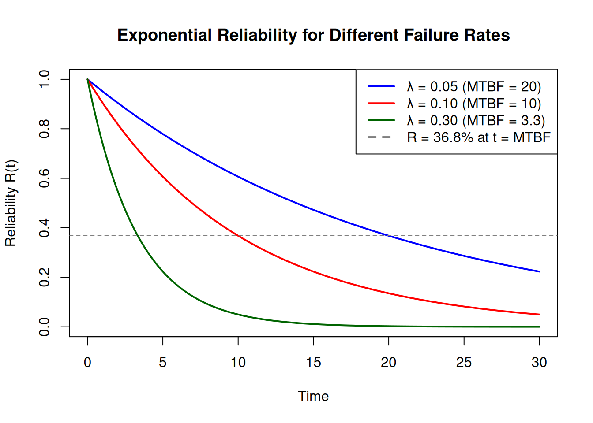
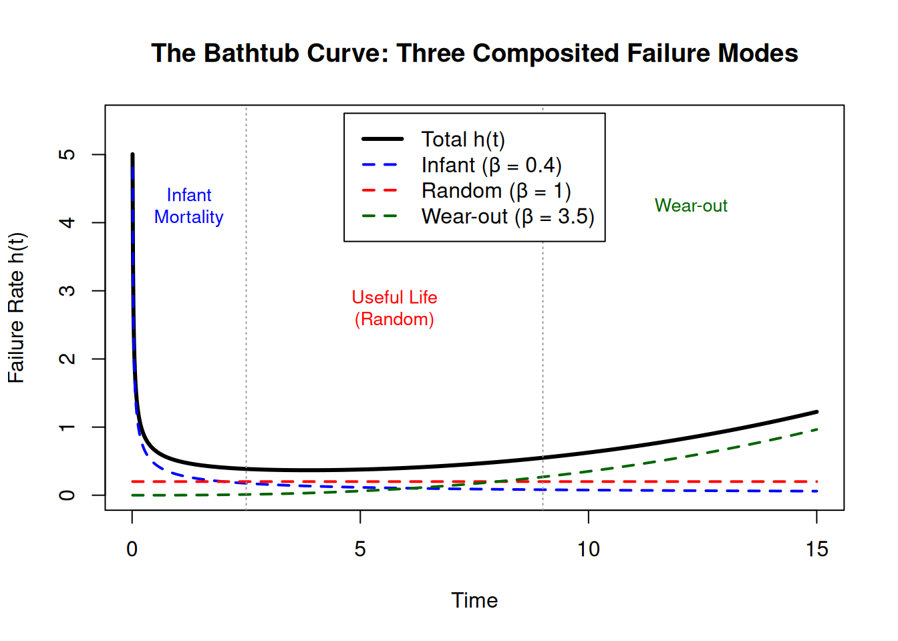
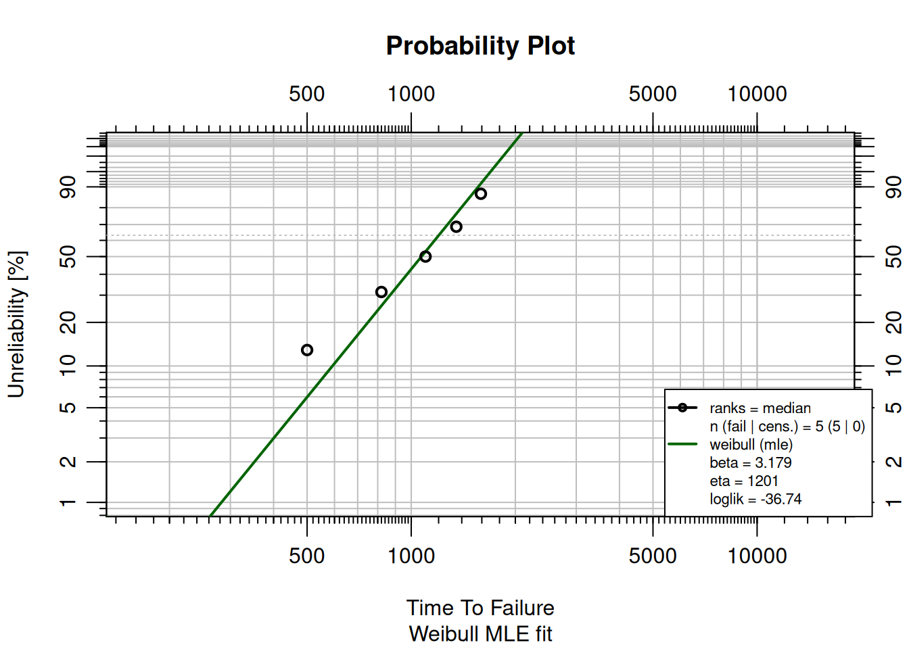
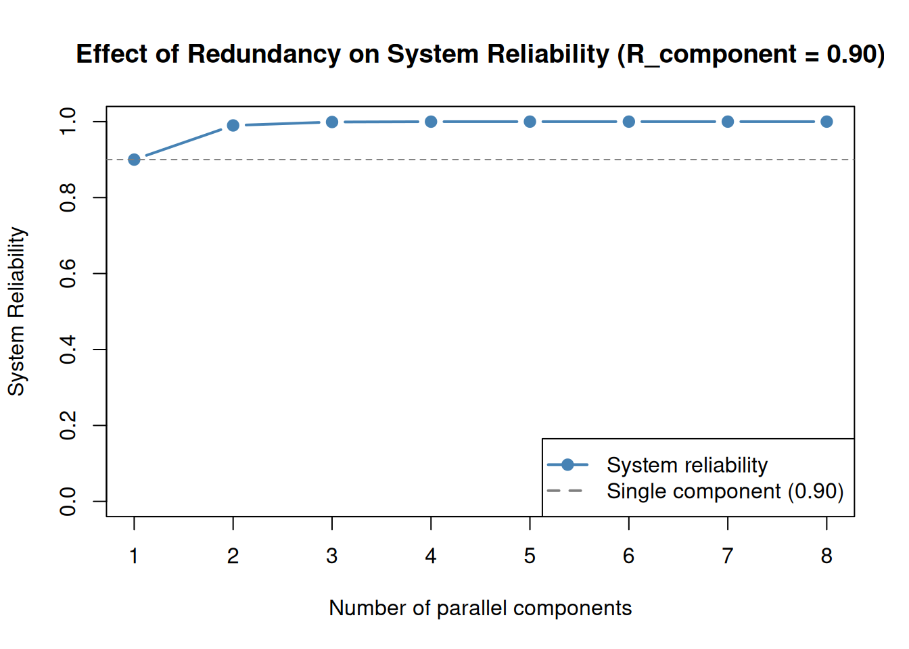

library(ReliaLearnR)
# Motor: 5 years total, 10 days failed
rel(outageTime = 10, totalTime = 5 * 365)[1] 0.9945205Reliability, Availability, and Maintainability (RAM) are the foundational metrics of reliability engineering. They describe how well a system performs its intended function, how often it is usable, and how quickly it can be restored when it fails. This chapter introduces these concepts and builds toward calculating probability of failure, \(B_n\) life, and system-level reliability.
By the end of this chapter, you will be able to:
Reliability: The ability of an item to perform its intended function without failure over a specified period.
Availability: The proportion of time an item is in a functioning condition.
Maintainability: The ease and speed with which an item can be restored to operational status after a failure.
These three concepts are interrelated: a highly reliable item will be available more often, and an item that is easy to maintain can be restored to service quickly, further improving availability.
Reliability is the probability that an item will not fail under defined conditions for a specified period:
\[\text{Reliability} = \left(1 - \frac{\text{Failed Time}}{\text{Total Time}}\right) \times 100\]
Example: A motor ran for 5 years total and was failed for 10 of those days.
\[\text{Reliability} = \left(1 - \frac{10}{5 \times 365}\right) \times 100 = 94.5\%\]
Unreliability is the complement:
\[\text{Unreliability} = 1 - \text{Reliability} = \frac{\text{Failed Time}}{\text{Total Time}} \times 100\]
The ReliaLearnR package includes helper functions for these calculations:
library(ReliaLearnR)
# Motor: 5 years total, 10 days failed
rel(outageTime = 10, totalTime = 5 * 365)[1] 0.9945205A machine ran for 3 years total and was failed for 5 of those days. What are the reliability and unreliability?
Availability accounts for both failed time and scheduled maintenance: any time the item is unavailable for service:
\[\text{Availability} = \left(1 - \frac{\text{Unavailable Time}}{\text{Total Time}}\right) \times 100\]
Example: A motor ran for 5 years, was failed for 10 days, and had 15 days of scheduled maintenance.
\[\text{Availability} = \left(1 - \frac{10 + 15}{5 \times 365}\right) \times 100 = 93.2\%\]
# Motor: 5 years, 10 days failed + 15 days maintenance = 25 unavailable
avail(unavailTime = 25, totalTime = 5 * 365)[1] 0.9863014Note: standby time (available but not in use) does not count as unavailable time.
What is the difference between reliability and availability?
MTTR measures maintainability: the average time required to repair a failed item:
\[\text{MTTR} = \frac{\sum_{i=1}^{n} \text{RepairTime}_i}{\text{RepairCount}}\]
Example: 5 failures with repair times of 5, 10, 15, 8, and 12 days.
\[\text{MTTR} = \frac{5 + 10 + 15 + 8 + 12}{5} = 10 \text{ days}\]
MTTF is a reliability measure for non-repairable items. Once the item fails, it is replaced rather than repaired.
\[\text{MTTF} = \frac{\text{Total Time}}{\text{FailureCount}}\]
Example: 100 motors run for 5 years total; 5 failures occur.
\[\text{MTTF} = \frac{5 \times 100}{5} = 100 \text{ years}\]
mttf(failures = 5, totalTime = 5 * 100)[1] 100MTBF is the reliability measure for repairable systems, where the item is restored to service after each failure.
\[\text{MTBF} = \frac{\text{Total Time}}{\text{FailureCount}}\]
The formula is identical to MTTF, but the interpretation differs: MTBF is the average time between successive failures on the same system.
Example: A motor fails 5 times during 10,000 total operating hours.
\[\text{MTBF} = \frac{10{,}000}{5} = 2{,}000 \text{ hours}\]
mtbf(failures = 5, totalTime = 10000)[1] 2000A fleet of 50 generators runs for 8 years. During that time, 20 failures occur. Calculate the MTBF in years.
fleet_size <- 50
years <- 8
failures <- 20
# Calculate MTBF = (fleet_size * years) / failuresfleet_size <- 50
years <- 8
failures <- 20
MTBF <- (fleet_size * years) / failures
MTBF # 20 years[1] 20What is the difference between MTTF and MTBF?
The failure rate \(\lambda\) is the inverse of MTBF:
\[\lambda = \frac{1}{\text{MTBF}} = \frac{\text{FailureCount}}{\text{Total Time}}\]
A key assumption of MTBF is a constant failure rate throughout the item’s life. While this is not always true in practice, it is a reasonable approximation for many systems during their useful life period.
Example: 100 motors run for 10 years; 20 failures occur.
\[\lambda = \frac{20}{10 \times 100} = 0.02 \text{ failures per year}\]
fr(failures = 20, totalTime = 10 * 100)[1] 0.02Under the constant failure rate assumption, failure times follow an exponential distribution. The cumulative probability of failure prior to time \(t\) is:
\[F(t) = 1 - e^{-\lambda t}\]
And the cumulative probability of survival (reliability function) is:
\[R(t) = 1 - F(t) = e^{-\lambda t}\]
Example: A motor has a failure rate of 0.1 failures/year. Probability of surviving 10 years:
\[R(10) = e^{-10 \times 0.1} = e^{-1} \approx 36.8\%\]
lambda <- 0.1
t <- 10
R <- exp(-lambda * t)
R[1] 0.3678794The shape of \(R(t) = e^{-\lambda t}\) depends entirely on \(\lambda\). Below are curves for three different failure rates:
t <- seq(0, 30, by = 0.1)
plot(t, exp(-0.05 * t), type = "l", col = "blue", lwd = 2,
xlab = "Time", ylab = "Reliability R(t)",
main = "Exponential Reliability for Different Failure Rates",
ylim = c(0, 1))
lines(t, exp(-0.1 * t), col = "red", lwd = 2)
lines(t, exp(-0.3 * t), col = "darkgreen", lwd = 2)
abline(h = exp(-1), col = "gray50", lty = 2)
legend("topright",
legend = c("λ = 0.05 (MTBF = 20)", "λ = 0.10 (MTBF = 10)", "λ = 0.30 (MTBF = 3.3)",
"R = 36.8% at t = MTBF"),
col = c("blue", "red", "darkgreen", "gray50"),
lty = c(1, 1, 1, 2), lwd = 2)
Note that at \(t = \text{MTBF} = 1/\lambda\), reliability is always \(e^{-1} \approx 36.8\%\) regardless of \(\lambda\). This is a universal property of the exponential distribution.
A pump has a failure rate of 0.05 failures/year. Calculate the probability of survival at \(t = 10\) years.
lambda <- 0.05
t <- 10
# R(t) = exp(-lambda * t)lambda <- 0.05
t <- 10
R <- exp(-lambda * t)
R # ~0.607 (60.7% survival)[1] 0.6065307The \(B_n\) life is the time at which \(n\)% of a population is expected to have failed. Some industries use \(L_n\) instead, but the concept is identical.
To find \(B_n\), set \(F(t) = n/100\) and solve for \(t\):
\[B_n = -\frac{\ln(1 - n/100)}{\lambda}\]
Example: Motor with \(\lambda = 0.2\) failures/year. B10 life:
\[B_{10} = -\frac{\ln(1 - 0.1)}{0.2} = 0.526 \text{ years}\]
lambda <- 0.2
B10 <- -log(1 - 0.10) / lambda
B10 # 0.526 years[1] 0.5268026A component has a failure rate of 0.05 failures/year. Calculate the B10 life.
lambda <- 0.05
# B10 = -log(1 - 0.10) / lambdalambda <- 0.05
B10 <- -log(1 - 0.10) / lambda
B10 # ~2.1 years[1] 2.10721What is the relationship between failure rate and MTBF?
The exponential model assumes a constant failure rate. This is appropriate for electronic components that fail at random, but many mechanical components have failure rates that change over time.
The Weibull distribution (Abernethy 2004) generalizes the exponential by adding a shape parameter \(\beta\):
\[R(t) = e^{-(t/\eta)^\beta}\]
| \(\beta\) | Failure rate | Typical cause |
|---|---|---|
| \(< 1\) | Decreasing | Infant mortality |
| \(= 1\) | Constant | Random failures, exponential applies |
| \(> 1\) | Increasing | Wear-out (fatigue, corrosion, aging) |
When \(\beta = 1\), the Weibull reduces to the exponential with \(\lambda = 1/\eta\).
The failure rate of a population of items over its lifetime traces a characteristic shape known as the bathtub curve, named for its distinctive U-profile. Rather than drawing it as a stylized cartoon, we can build it analytically by compositing the three Weibull failure modes:
\[h(t) = \underbrace{h_{\text{infant}}(t)}_{\beta < 1} \;+\; \underbrace{h_{\text{random}}(t)}_{\beta = 1} \;+\; \underbrace{h_{\text{wear-out}}(t)}_{\beta > 1}\]
where the Weibull hazard rate is \(h(t) = (\beta/\eta)(t/\eta)^{\beta-1}\). Each term represents a physically distinct failure mechanism; the bathtub shape is not assumed, it emerges from their sum.
t <- seq(0.01, 15, by = 0.01)
# Three Weibull hazard rate components
h_infant <- function(t, b = 0.4, e = 2) (b/e) * (t/e)^(b-1) # infant mortality
h_random <- function(t, b = 1.0, e = 5) (b/e) * (t/e)^(b-1) # random failures
h_wearout <- function(t, b = 3.5, e = 10) (b/e) * (t/e)^(b-1) # wear-out
h_total <- h_infant(t) + h_random(t) + h_wearout(t)
plot(t, h_total, type = "l", col = "black", lwd = 3,
xlab = "Time", ylab = "Failure Rate h(t)",
main = "The Bathtub Curve: Three Composited Failure Modes",
ylim = c(0, max(h_total) * 1.1))
lines(t, h_infant(t), col = "blue", lwd = 2, lty = 2)
lines(t, h_random(t), col = "red", lwd = 2, lty = 2)
lines(t, h_wearout(t), col = "darkgreen", lwd = 2, lty = 2)
abline(v = c(2.5, 9), col = "gray60", lty = 3)
text(1.25, max(h_total) * 0.85, "Infant\nMortality", col = "blue", cex = 0.85)
text(5.75, max(h_total) * 0.55, "Useful Life\n(Random)", col = "red", cex = 0.85)
text(12.25, max(h_total) * 0.85, "Wear-out", col = "darkgreen", cex = 0.85)
legend("top", inset = 0.02,
legend = c("Total h(t)", "Infant (β = 0.4)", "Random (β = 1)", "Wear-out (β = 3.5)"),
col = c("black", "blue", "red", "darkgreen"), lwd = c(3, 2, 2, 2), lty = c(1, 2, 2, 2))
Each region maps to a distinct engineering strategy:
A pump has \(\beta = 2.8\). Which region of the bathtub curve does it occupy, and what maintenance strategy is most appropriate?
The bathtub curve is a population-level concept: individual units fail at random times, but the aggregate failure rate of a large fleet traces this shape. Fitting a separate Weibull to each failure mode is covered in Chapter 3.
The WeibullR package (Silkworth and Symynck 2022) provides functions for Weibull fitting in R.
library(WeibullR)
failures <- c(500, 820, 1100, 1350, 1590)
fit <- MLEw2p(failures, show = TRUE)
A \(\beta\) close to 1 indicates random failures consistent with the exponential model. Higher values indicate wear-out behavior. The Life Data Analysis chapter covers Weibull analysis in depth.
Real systems combine many components. System reliability depends on how those components are arranged.
In a series configuration, every component must function for the system to function:
\[R_{\text{sys}} = R_1 \times R_2 \times \cdots \times R_n = \prod_{i=1}^{n} R_i\]
A series system is always less reliable than its weakest component.
R_components <- c(0.90, 0.90, 0.90)
R_series <- prod(R_components)
R_series # 72.9%[1] 0.729In a parallel configuration, only one component needs to function, providing redundancy. The system fails only when all components fail:
\[R_{\text{sys}} = 1 - (1 - R_1)(1 - R_2) \cdots (1 - R_n)\]
R_parallel <- 1 - prod(1 - R_components)
R_parallel # 99.9%[1] 0.999The effect of redundancy increases dramatically with the number of parallel components:
n_vals <- 1:8
R_c <- 0.90
R_par <- 1 - (1 - R_c)^n_vals
plot(n_vals, R_par, type = "b", col = "steelblue", lwd = 2, pch = 19,
xlab = "Number of parallel components",
ylab = "System Reliability",
main = "Effect of Redundancy on System Reliability (R_component = 0.90)",
ylim = c(0, 1))
abline(h = R_c, col = "gray50", lty = 2)
legend("bottomright",
legend = c("System reliability", "Single component (0.90)"),
col = c("steelblue", "gray50"), lty = c(1, 2), pch = c(19, NA), lwd = 2)
Four components each have reliability R = 0.85. Calculate the series and parallel system reliability.
R_comp <- 0.85
# Series: R_sys = prod(R_components)
# Parallel: R_sys = 1 - prod(1 - R_components)R_comp <- rep(0.85, 4)
R_series <- prod(R_comp)
R_parallel <- 1 - prod(1 - R_comp)
R_series # ~0.522 (52.2%)[1] 0.5220062R_parallel # ~0.9995 (99.95%)[1] 0.9994937Three components each have 80% reliability. What is the series system reliability?
Key takeaways: